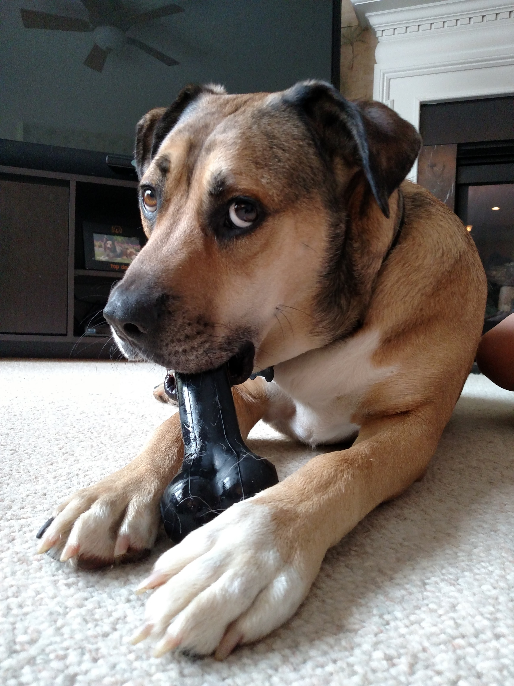
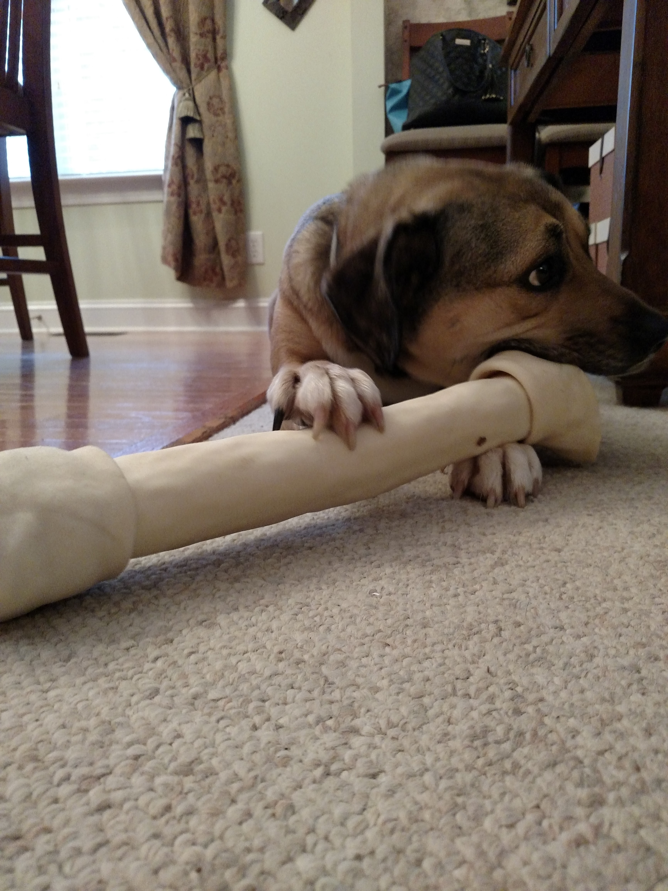
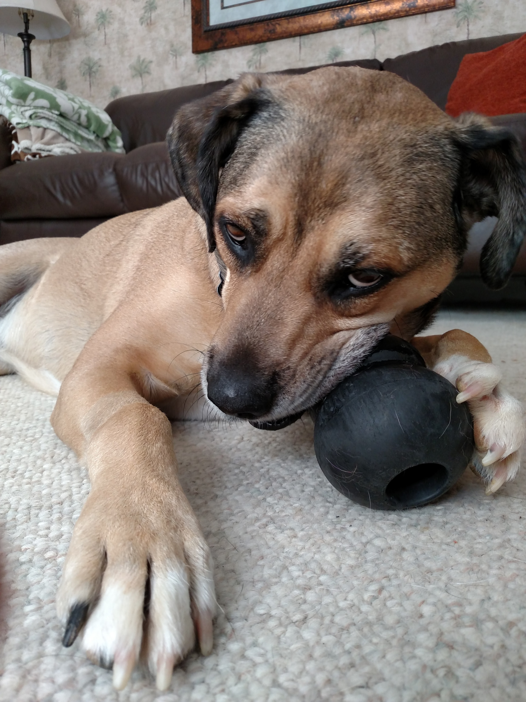
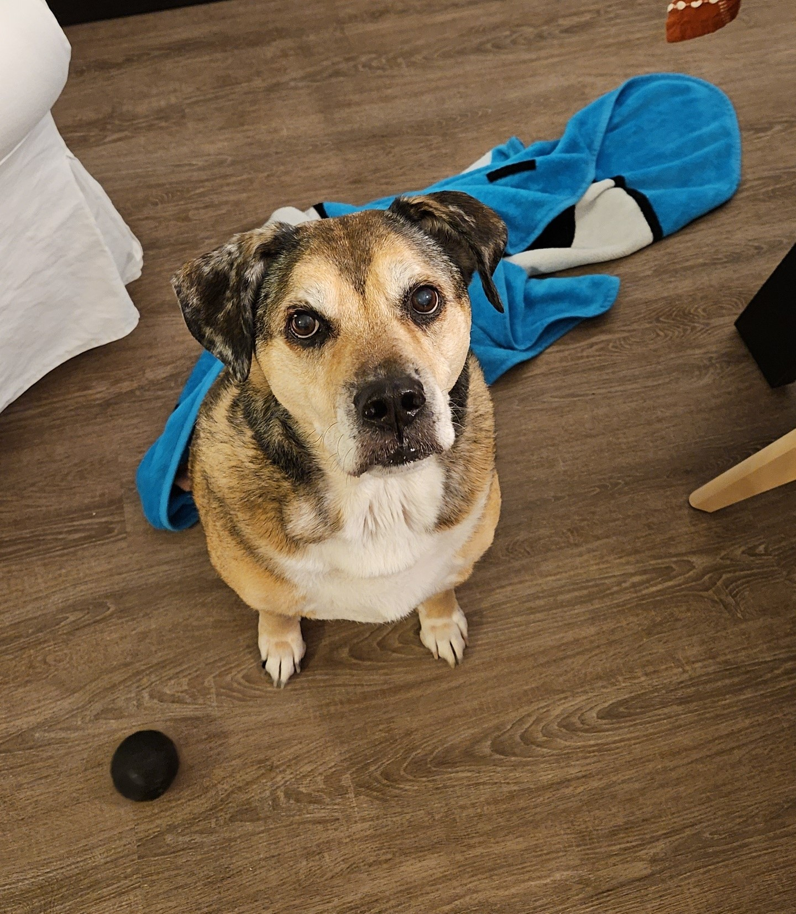

My Dog Lambo
My Dog Lambo| Toy | Description | Picture |
|---|---|---|
| Kong Bone | Lambo's all time favorite. He needed Kong brand toys since he was a heavy chewer. |  |
| Rawhide Bone | In his younger years, he loved rawhide! |  |
| Kong Classic | We nicknamed this toy "Michelin Man" due to its peculiar shape. He would get so excited when we asked, "Where is your michelin man?!" |  |
| Kong Ball | We used to buy him squeaky toy balls, but he would destroy them in a day. So the next best thing was a durable kong ball. |  |